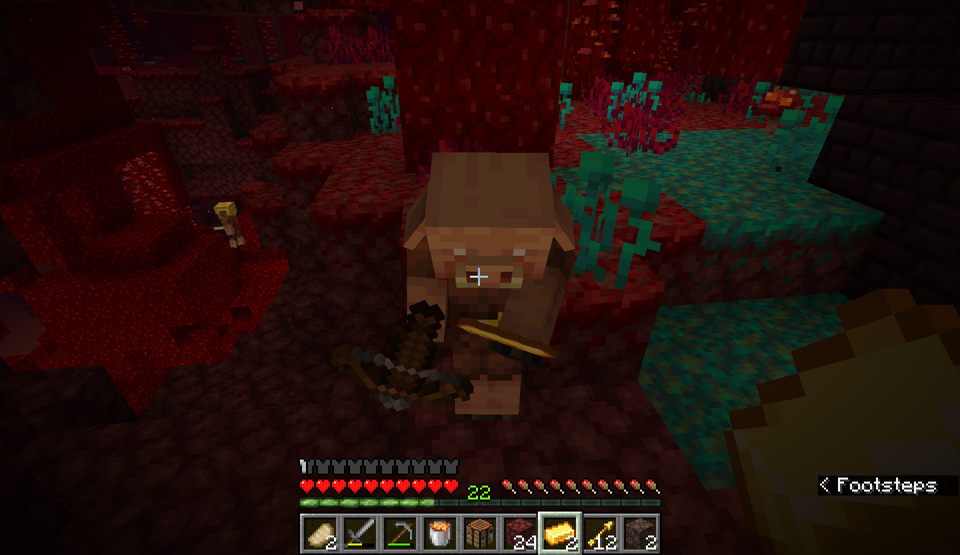

Overview
Purpose
The purpose of this site is to share my experience with surviving in the Nether of Minecraft.
Audience
My audience is anyone who wants to play Minecraft. There is no age restriction, but young kids should probably do homework first. And college students.
Branding
Website Logo
Style Guide
Color Palette
| Primary | Secondary | Accent 1 | Accent 2 |
|---|---|---|---|
Typography
Heading Font: Jaquard 12
Paragraph Font: Jersey 10
Normal paragraph example
The best Whitewater Rafting in Colorado, White Water Rafting Company offers rafting on the Colorado and Roaring Fork Rivers in Glenwood Springs. Since 1974, we have been family owned and operated, rafting the Shoshone section of Glenwood Canyon and beyond.
Colored paragraph example
Trips vary from mild and great for families, to trips exclusively for physically fit and experienced rafters. No matter what type of river adventures you are seeking, White Water Rafting Company can make it happen for you.
Navigation with Hover
Site Map
Wireframes
Home

Basic Resources
Content
Home page
This site teaches about surviving in the Nether. Specifically, how to survive using only resources found in the Nether. This is a unique challenge with several limitations. Even if you aren't doing this challenge, information here can still be helpful for generally exploration and survival. Base Location If you are building a base in the Nether, I suggest building in the Warped Forest. There are a couple reasons for this. One, Warped Forests provide easy access to wood. Second, no hostile mobs spawn here. There are Endermen, but they are much easier to deal with than piglins or magma cubes. If you build in a Crimson Forest you run into the issue of piglins seeing you use chests, which causes them to become hostile. I also recommend building a base close to other biomes if possible. Many resources are biome specific, so building near several grants easier access to a variety of items.
Images for the Home page
Basic Resources
Food Food is harder to come by in the Nether. There aren’t any passive mobs that drop meat, so food can be more tedious or dangerous to gather. Luckily there are a couple options available. First, mushroom stew. You can find brown and red mushrooms growing in Nether Waste biomes. With a bowl you can make a simple and filling meal. The issue with mushrooms as a food source is that farming them is hard. If you want to, you can make a dark room and plant a few mushrooms. Over time, the mushrooms will spread and sprout new ones. The other option for food is pork chops. Hoglins, which live in the crimson forest, are arguably the best source of food in the Nether. When killed, they drop 2-4 pork chops. If killed while on fire, the pork chops are automatically cooked. Cooking them on a soul campfire is also an option. To effectively kill them, use a lava bucket for a couple seconds, then pick the lava back up so the pork chops don’t fall into the lava. To stay safe while doing this, bring a warped fungus. Hoglins are terrified of them and will run away from them. Warped fungus provides a safe zone when in the Crimson Forest. Wood and Stone Basic resources like wood and stone are much harder to get in the Nether. There are two types of trees in the Nether, and they generate in the Crimson and Warped Forests. They can provide plenty of wood and building blocks, but don’t drop saplings like Overworld trees. They can be grown only by bonemealing the fungus that they grow from. You can renewably get the warped and crimson fungus by bonemealing the ground in their respective biomes. Bonemeal comes from bones, bone blocks, and from a composter. The leaf blocks on Nether trees provide a slow but safe option for early game bonemeal if placed in the composter. Later on you can use bones from skeletons as a good source of bonemeal. Stone can be found in two places in the Nether: The Basalt Delta biome and in piglin barters. Both of these options are viable, but piglin bartering is safer. Piglins will drop 8-16 on about an 8% chance. Iron is rare, and can be only found inside loot chests or in piglin barters.
Images for the Page 2
Structures
Structures Nether fortresses and bastion remnants are the two large structures that generate in the Nether. They contain lots of items that can’t be acquired in any other way. They can also be very dangerous. Here is some advice for exploring and looting nether fortresses and bastion remnants. Nether Fortresses Nether fortresses are made of open air walkways and closed corridors. Wither skeletons and blazes spawn in fortresses, making them very dangerous. In addition, the hallways can often be hard to navigate, leading people to get lost while exploring. Here is the best advice I have on exploring and looting nether fortresses. At every intersection make a T shape out of blocks that stand out against the netherbrick. This serves two purposes. First, wither skeletons are too tall to walk through a gap two blocks tall. Second, you can hide behind the pillar in the middle to avoid blazes and skeletons. It also makes navigation easier; you know you have been somewhere before because there are Ts at the intersection. To keep from getting lost, put a different block on the side of the intersection that leads home. I like to use shroomlights. Bastion Remnants To explore bastion remnants you need a couple resources. First, you need gold armor. Piglins only attack you if you aren’t wearing gold armor, so making some will help you avoid a lot of trouble. Second, you need a lava bucket. The exception to the gold armor rule is the piglin brute. Brutes don’t care about the armor and will attack on sight. They deal lots of damage and have lots of health. Attacking brutes angers the other piglins, so that is a dangerous option. To deal with them, stand where they can’t reach you and pour lava on them. This will kill the brute quickly and doesn’t anger the other piglins. When you get to the loot, be careful. Opening chests and mining gold in their presence will anger the piglins. To avoid this, close yourself off from the piglins so they don’t see you doing the provoking action.
Images for the Page 3
Wireframes
Create three wireframes for your site. One for each page and list them here
Home
[Any additional details about home that the wireframe does not make clear]
[Page 2]
[Any additional details about page 2 that the wireframe does not make clear]
[Page 3]
[Any additional details about page 3 that the wireframe does not make clear]